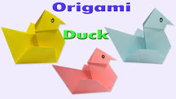
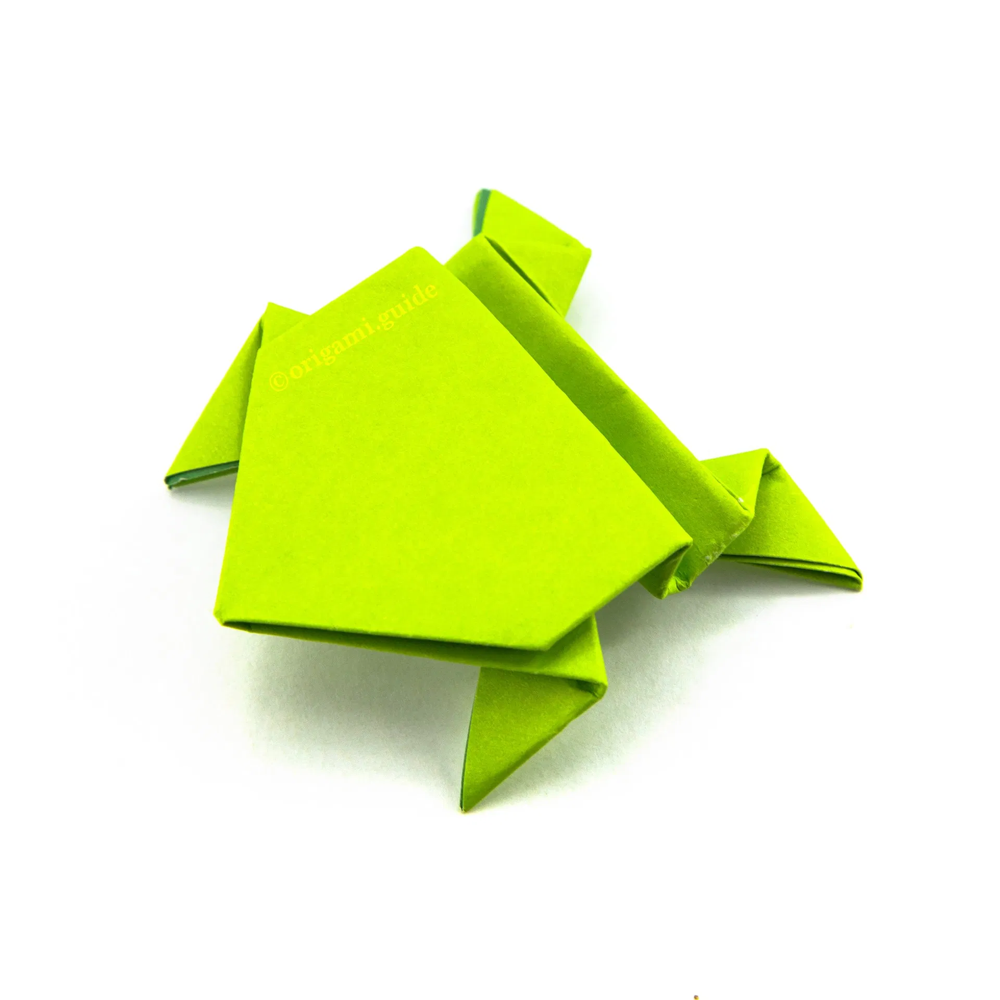
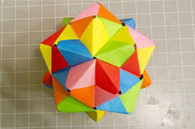

Swan

Swans are beautiful birds, they are the largest members of the duck and goose family. ... A male swan is called a cob, and a female swan is called a pen.
Duck
Ducks are birds that are also called “waterfowls” because they are normally found in places with water like marshes, oceans, rivers, ponds, and lakes. This is because ducks love the water. Ducks can live from 2-12 years
Frog
A frog has smooth, moist skin and big, bulging eyes. Its hind legs are more than twice as long as its front ones. Most frogs have webbed back feet to help them leap and swim. Tree frogs have sticky disks on the tips of their fingers and toes.
Ball
The shape of a ball is round. A number of games can be played using a ball, for instance, cricket, hockey, basketball etc.